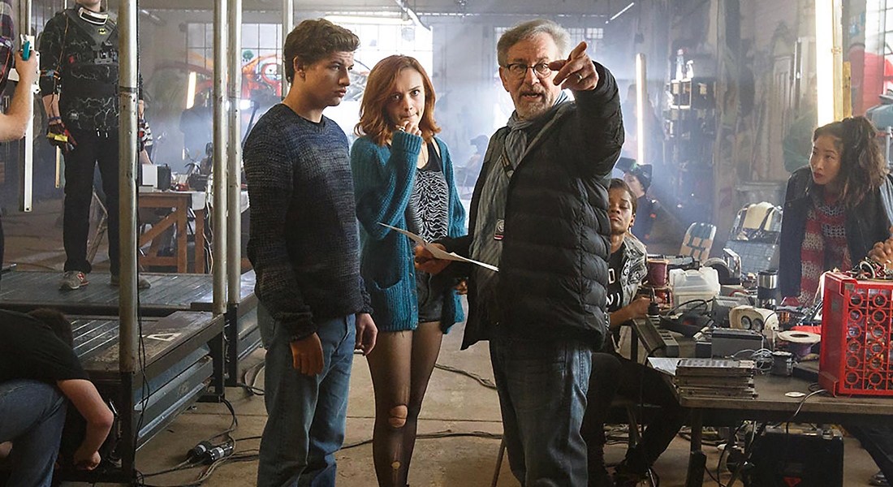
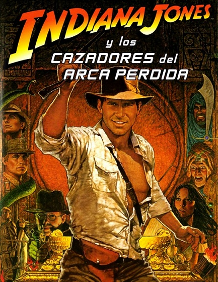

| Es un director, guionista y productor de cine estadounidense. Se lo considera uno de los pioneros de la era del Nuevo Hollywood y es también uno de los directores más reconocidos y populares de la industria cinematográfica mundial. En sus películas, Spielberg ha tratado temas y géneros muy diversos. Sus primeros filmes de ciencia ficción y aventuras, como Tiburón (1975), Close Encounters of the Third Kind (1977), la franquicia de Indiana Jones y E.T., el extraterrestre (1982), son considerados arquetipos del cine de evasión del Hollywood moderno. Candidato siete veces a los Premios Óscar en la categoría de mejor director, obtuvo el premio en dos ocasiones, con La lista de Schindler (1993) y Saving Private Ryan (1998). Tres de sus películas (Tiburón, E.T., E l extraterrestre y Parque Jurásico) lograron ser las películas de mayor recaudación en su momento y se convirtieron en verdaderos fenómenos de masas. Ha sido también condecorado con la Orden del Imperio Británico y la Medalla Nacional de Humanidades. Aficionado al cómic, tiene una gran colección Las ganancias de sus películas en todo el mundo, sin ajustar precios a la inflación, superan los diez mil millones de dólares, lo que convierte a Spielberg en el director de cine con mayor recaudación de la historia. | ||
|
|  | |
| Una de las más actuales que tiene este icono del cine es Ready Player One: Una cinta audio visual que nos transporta a un metaverso, representado de f orma fantástica, con efectos especiales increíbles y una banda sonora que no tiene desperdicio, acompañado de un espléndido casting, nos muestra un mundo de videojuegos fantásticos. | ||

| La historia sigue los pasos del joven Wade Owen Watts, un jugador de videojuegos del año 2045 que, como el resto de la humanidad, prefiere el metaverso de realidad virtual OASIS al cada vez más sombrío mundo real. En este lugar su creador escondió las piezas de un rompecabezas cuya resolución conduce a una fortuna de medio billón de dólares y el control total de la empresa que mantiene OASIS. Las claves del enigma están basadas en la cultura popular de los años 80 y la vida del creador Durante años, millones de humanos han intentado dar con ellas, sin éxito. Wade logra resolver el primer rompecabezas del premio, y, a partir de ese momento, debe competir contra miles de jugadores y una empresa rival para conseguir el trofeo que es un huevo de pascua | |
| Seguimos con un clásico del cine, y una de las películas más icónicas de Steven Spielberg, y es nada más y nada menos que Indiana Jones, q ue el encargado de darle vida al protagonista de esta historia es nada más y nada menos que Harrison Ford, al que reconocen sobretodo por ser el encargado de darle vida a Han Solo en la exitosa saga de Star Wars, acompañado de eso tenemos como no, los buenos efectos de la época, el guión que logró cautivar a millones, y la maestría como director de Steven. | ||
|  | Año 1936. Indiana Jones es un profesor de arqueología, dispuesto a correr peligrosas aventuras con tal de conseguir valiosas reliquias históricas. Después de una infructuosa misión en Sudamérica, el gobierno estadounidense le encarga la búsqueda del Arca de la Alianza, donde se conservan las Tablas de la Ley que Dios entregó a Moisés. Según la leyenda, quien las posea tendrá un poder absoluto, razón por la cual también la buscan los nazis. | |